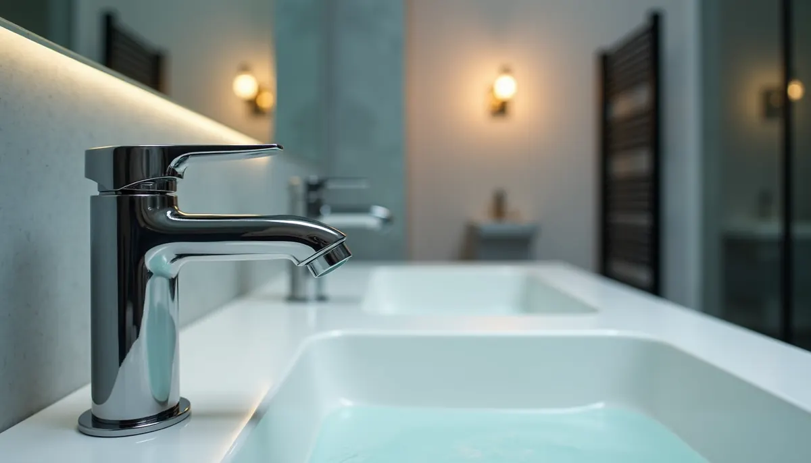
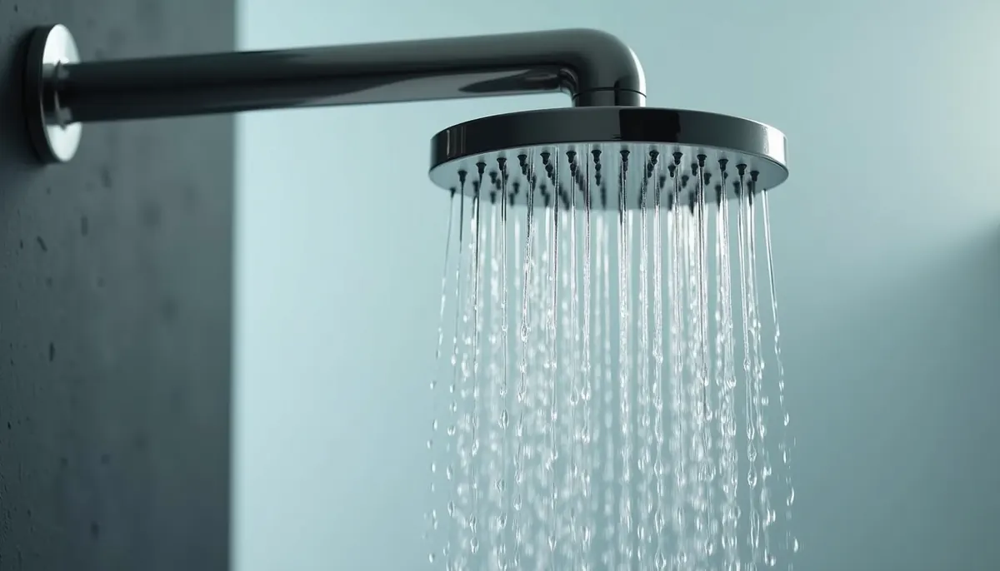
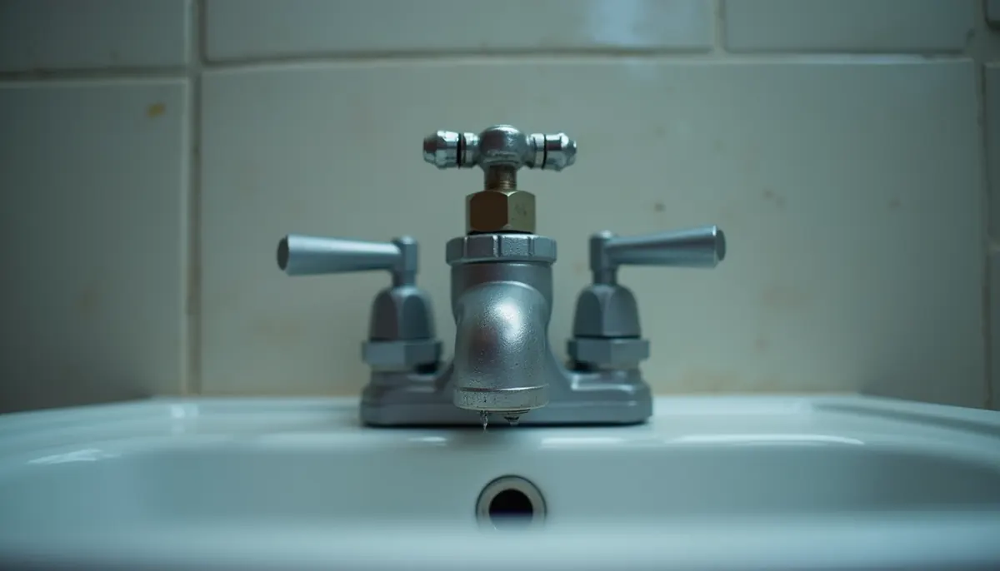

In the heart of Murfreesboro, Tennessee, and in homes all over the country, plumbing is a vital part of our daily lives, often working tirelessly behind the scenes. Many of us only think about it when there's a problem. What if we told you that by updating your home's plumbing fixtures, you could prevent headaches, save money, and live a more sustainable lifestyle?
It’s true! Let’s explore the clear benefits of refreshing your plumbing, focusing on water cost savings and the often-overlooked star of the show: the angle stop valves.
The Clear Advantages of Updating Your Plumbing Fixtures
Old plumbing fixtures may look outdated, but their impact goes beyond just aesthetics. They can drain your wallet and lead to unnecessary stress. Here are some compelling reasons to consider an upgrade:
Significant Water Savings
Water savings is often the biggest motivator for upgrading fixtures. For example, older toilets can consume between 3.5 and 7 gallons per flush, while high-efficiency models use just 1.6 gallons or less. This switch can save a family of four approximately 12,000 gallons of water each year, translating into savings of around $120 annually on the water bill. Similarly, old faucets can flow at rates of 2.2 gallons per minute. Installing WaterSense® labeled faucets can cut this down by 30%, offering a significant reduction in usage without impacting performance.
Reduced Utility Costs Beyond Water
Less water usage leads to reduced energy costs too, as you'll need less energy to heat the water. Homes that upgrade to energy-efficient plumbing fixtures could save an average of 25% on their utility bills. Imagine enjoying lower gas and electricity bills when you make these economical changes!
Enhanced Performance and Comfort
By upgrading to modern fixtures, you gain better performance. For instance, low-flow showerheads can provide a satisfying spray while using significantly less water. Newer faucets also come with improved temperature controls and leak-resistant designs, giving you peace of mind and a more enjoyable experience.
Improved Aesthetics and Home Value
Chipped or corroded fixtures can detract from your home’s charm. Replacing them with stylish, modern fixtures not only improves your daily experience but also boosts your home’s resale value. According to a 2020 report by the National Association of Realtors, homeowners can expect a return on investment of up to 75% when updating plumbing fixtures in a remodel.
The Angle Stop: A Small Upgrade with Big Benefits
One often-overlooked hero in the world of plumbing is the angle stop.
What is an Angle Stop?
An angle stop is a small valve placed under sinks or behind toilets that controls the water flow to specific fixtures. While they may not be the star of a plumbing system, their role is essential for maintaining functionality.
The Advantages of Using Angle Stops
- Easier Maintenance: When it’s time to repair or replace a fixture, an angle stop allows you to turn off the water to that specific area without affecting the entire house. This means less hassle and quicker repairs.
- Preventing Catastrophic Failures: In case of leaks or plumbing issues, functional angle stops can help minimize water damage by enabling a quick shut-off of the affected area. This can potentially save homeowners thousands of dollars in water damage repairs.
Sustainable Living: How Home Upgrades Matter
Living sustainably is no longer just a trend; it’s crucial for the planet. By upgrading your plumbing fixtures and installing angle stops, you're contributing to water conservation.
Less Water Waste
Every drop counts, and investing in efficient fixtures means less water waste. For example, if every U.S. household replaced just one faucet with a WaterSense® model, it could save more than 1 trillion gallons of water annually.
Making a Difference at Home
Every small upgrade in your home can ripple into larger environmental impacts. By encouraging family and friends to consider similar improvements, you create a community effect of sustainability that benefits everyone.
Should You Consider an Upgrade?
The benefits of upgrading your plumbing fixtures and adding features like angle stops go far beyond aesthetics. These changes lead to real cost savings, a positive environmental impact, and a more functional home.
By calling Angle Stop Plumbing now, you can avoid costly repairs in the future, significantly reduce your water bills, and enjoy a beautiful, efficient space. So, if you haven’t made the switch yet, consider taking the plunge!
Your home deserves it!


